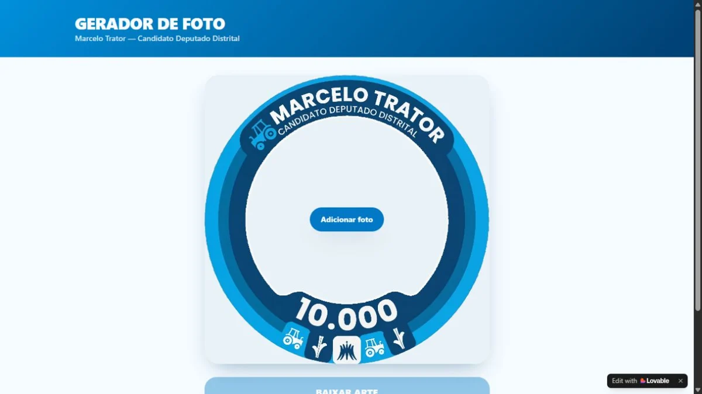
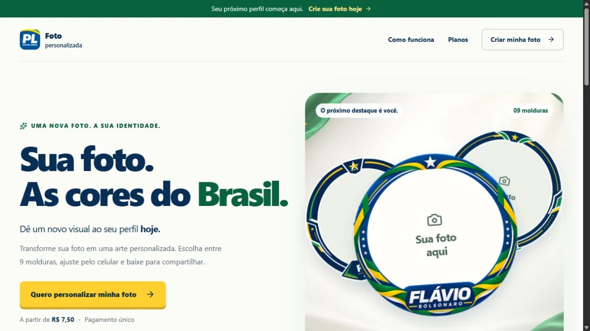
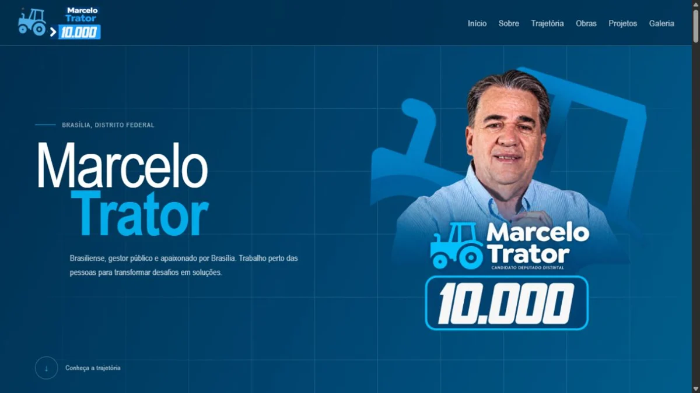
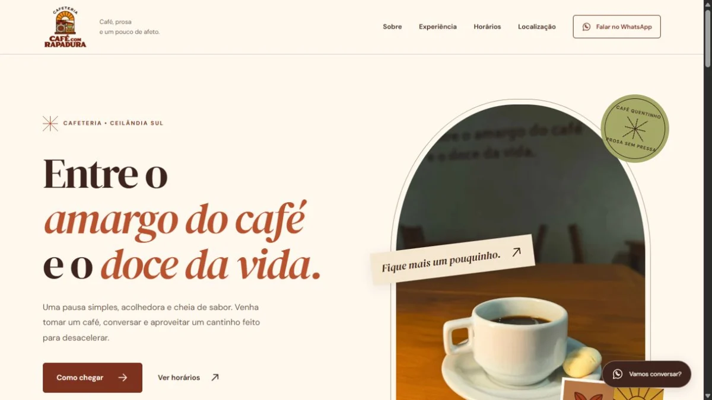
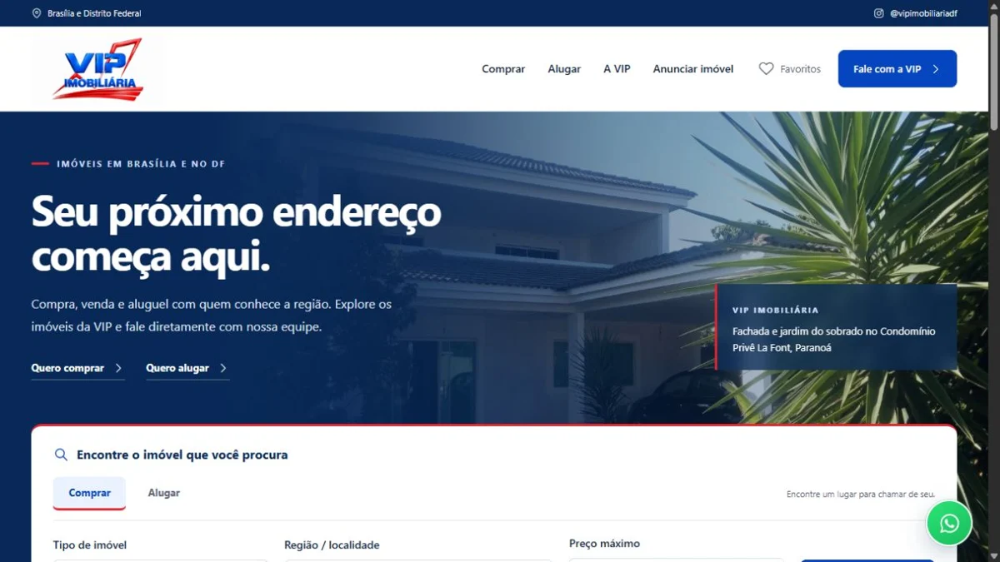

Explorar projeto ↗Gerador de fotos
Fotos com a identidade visual de Marcelo Trator, ajuste de enquadramento e download da arte pronta.
Visitar projeto ↗Olá, eu sou Ricardo Lopes.
Estudante de Desenvolvimento de Sistemas no IFB.
Aprendendo, criando e transformando ideias em
experiências digitais.
01 / PROJETOS SELECIONADOS
Cinco projetos. Diferentes possibilidades.
Um pouco do que venho construindo.

Explorar projeto ↗Fotos com a identidade visual de Marcelo Trator, ajuste de enquadramento e download da arte pronta.
Visitar projeto ↗
Explorar projeto ↗Personalização de fotos com molduras temáticas, ajuste pelo celular e planos de download.
Visitar projeto ↗
Explorar projeto ↗Uma apresentação de sua trajetória, atuação, obras e projetos, com registros em uma galeria visual.
Visitar projeto ↗
Explorar projeto ↗A identidade acolhedora de uma cafeteria, com sua experiência, horários, localização e contato.
Visitar projeto ↗
Explorar projeto ↗Imóveis em Brasília e no DF: compra e aluguel, filtros de busca, favoritos e acesso ao atendimento.
Visitar projeto ↗02 / SOBRE MIM
Sou Ricardo Lopes e estou construindo minha trajetória no desenvolvimento de sistemas. Gosto de dar forma às ideias e explorar como a tecnologia pode fazer parte do dia a dia.
Este portfólio reúne projetos que fazem parte da minha experiência prática e do meu aprendizado. Cada um é uma oportunidade de experimentar, resolver desafios e continuar evoluindo.
03 / FORMAÇÃO
04 / CONTATO
Uma conversa pode ser o começo
de um novo projeto.